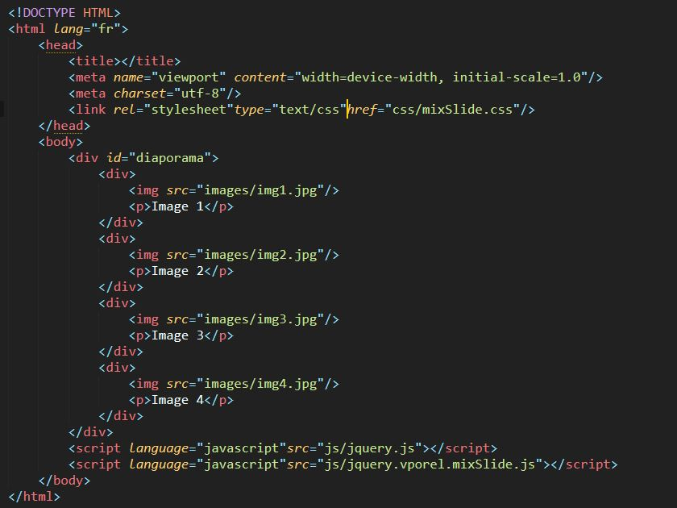
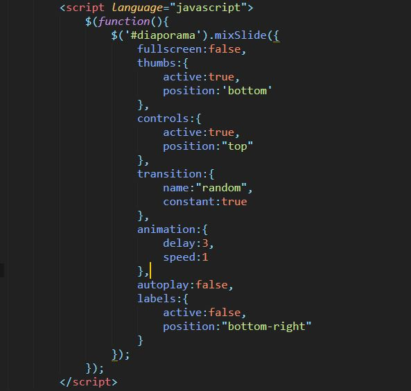

Code HTML
- First
Vous devez inclure dans votre document les fichiers du plug-in (mixSlide.css & mixSlide.js). Sans oublier la librairie javascript qui est dans le dossier src si vous ne l'avez pas - Second
La division contenant les images doit avoir un structure particulière pour pouvoir être gérée par le Plug-in.- Chaque image doit etre dans un division comme le montre l'image ci-dessus
- A côté de l'image une balise "p" pour le label. Ceci est facultatif si vous n'en avez pas besoin
Style CSS
Vous pouvez personnaliser le plug-in en changeant son apparence. Voici les selecteurs CSS à utiliser pour ce faire
| Selecteur | Element | Propriétés changeables |
|---|---|---|
| .mixSlide-frame.fullscreen | L'overlay dans le mode fullscreen | background:rgba(0,0,0,.7) |
| .mixSlide-container | Container | background:black |
| .mixSlide-images p | Labels des images | Toutes les propriétés pour du texte (font, color, ...) |
Script d'insertion
Ceci est un exemple. Il est bien sûr possible d'ajouter dd'autres options. Celles-ci sont présentées dans la partie qui suit;
Options
Options simples
| Option | Description | valeurs |
|---|---|---|
| fullscreen | charger le slide en plein écran | true | false |
| autoplay | charger le slide en avec le diaporama lancé | true | false |
Options complexes (en objets)
Exemple
transition : {
name : "slices",
count : 10
}
-
Labels : Textes associées aux images si vous les avez mis dans le code HTML
- active (true | false)
- position ("top" | "bottom" | "top-left" | "top-right" | "bottom-left" | "bottom-right")
-
Controls : Les boutons de control (next, prev, pause, play, fullscreen)
- active (true | false)
- position ("top-left" | "top-right" | "bottom-left" | "bottom-right")
-
thumbs : Les images en miniature
- active (true | false)
- position ("top-left" | "top-right" | "bottom-left" | "bottom-right")
-
transition : Définir la transition à utiliser. LEs attributs ici dépendent de la transition choisie
- name : nom_de_la_transition (la liste dans le section d'après)
- ... autres propriétés ....
Transitions
| Nom transition | Description | Propriétés nom : -description -valeur par defaut -autres valeurs |
Exemple |
|---|---|---|---|
| random | Laisser le script choisir la transition à utiliser |
|
transition : {
name : "random",
constant : true
}
|
| fade | variation opacité | Aucune |
transition : {
name : "fade"
}
|
| slide | Déplacement image entiere |
|
transition : {
name : "slide",
direction : "vertical"
}
|
| slices | Découpage de l'image en lamelles et deplacement des lamelles |
|
transition : {
name : "slices",
direction : "horizontal",
count : 20
}
|
| tiles | Découpage de l'image en carreaux et deplacement des carreaux |
|
transition : {
name : "tiles",
random : true,
count : 25
}
|
| circle | Transition en cercle |
|
transition : {
name : "circle",
origin : "top-left"
}
|
| square | Transition en carré |
|
transition : {
name : "square",
origin : "bottom-left"
}
|